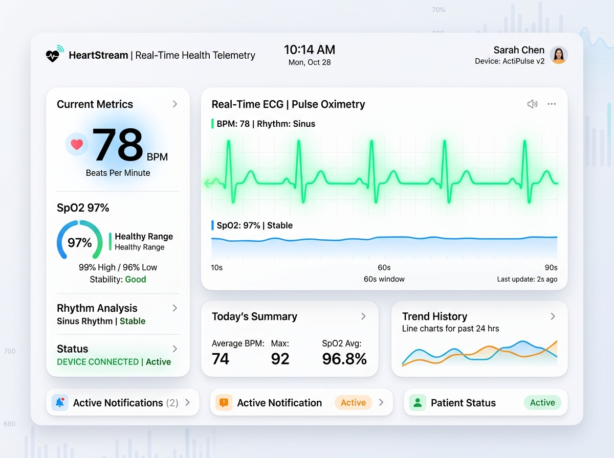

Heartbeat Monitor
From a fingertip to the cloud, in real time.

What if a caregiver could watch your vitals from any browser?
The Smart IoT Heartbeat Monitoring System captures heart rate and SpO2 in real time with an Arduino UNO and a MAX30102 pulse oximetry sensor, then streams live vitals over an ESP01 WiFi module to ThingSpeak for remote monitoring and visualization.
How It Works
Four stages between a heartbeat and a chart.
Optical capture
The MAX30102 shines red and infrared light through a fingertip and reads the photoplethysmogram (PPG) signal — the tiny changes in light absorption caused by each pulse of blood.
Concurrent processing on the Arduino
The Arduino UNO acquires both signals concurrently and computes beats per minute and blood oxygen saturation (SpO2) in real time.
WiFi uplink
An ESP01 module sends each reading to the cloud as telemetry packets — one vitals update per second, small enough to survive a weak campus network.
Remote dashboards on ThingSpeak
ThingSpeak charts the live stream, so a clinician or family member can watch heart rate and SpO2 trends from any browser, anywhere.
Live Demo
A simulated MAX30102 stream, right here in the browser. Drag the slider to change the pulse.